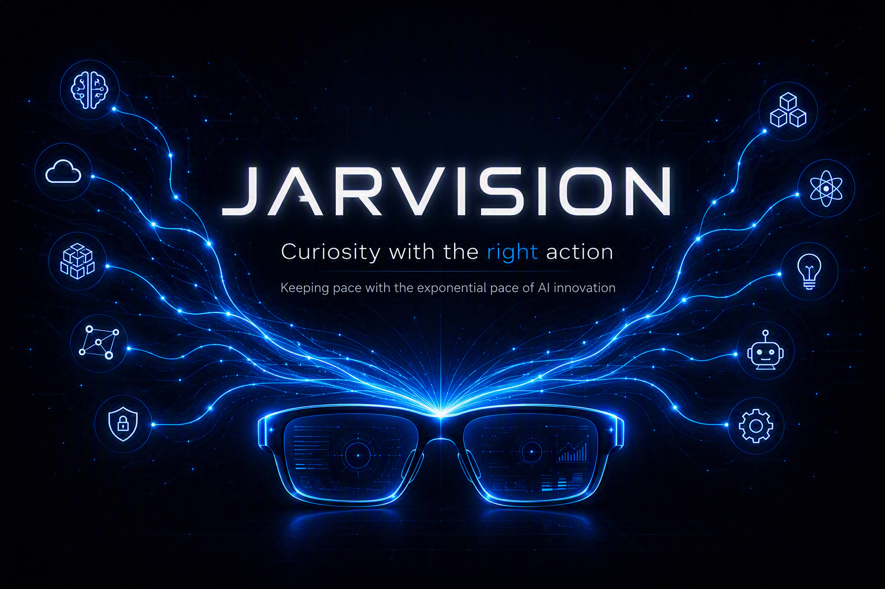

Competitors

A technology-forward company
While others are still debating whether to start, we've already simulated it, costed it, and know who's ready.
PMI with Jarvision



A step toward the 2026 Refreshed Strategy — powering the possibility of AI. And here, JARVISION gives vision to the multiverse of possibilities.
Three years in
While others are still debating whether to start, we've already simulated it, costed it, and know who's ready.

New technology becomes plug and play. Funding follows evidence, not the calendar — and small teams own outcomes end to end.


Same board, same pieces. We just decide better and faster.
We've played it out a thousand times in simulation — so while others study the position, we've already moved.
And everyone's in the game, not watching from the side.

Stay relevant with JARVISION